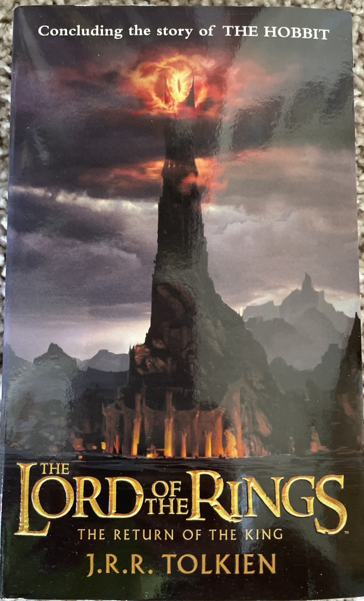
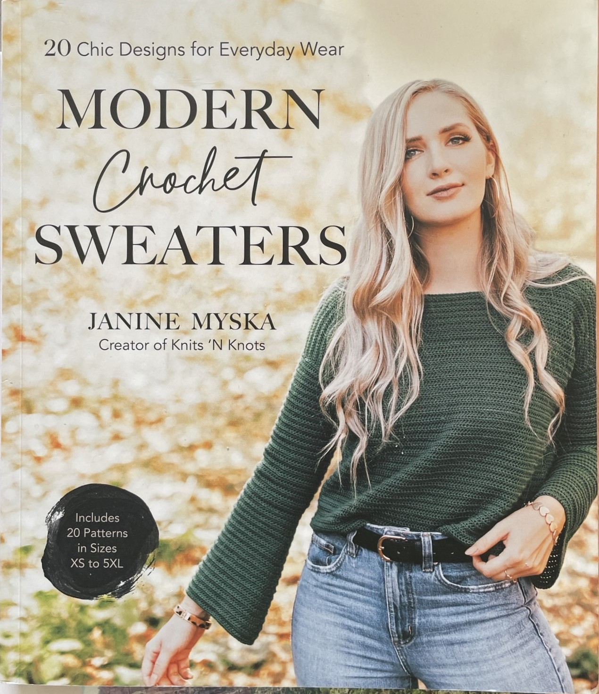
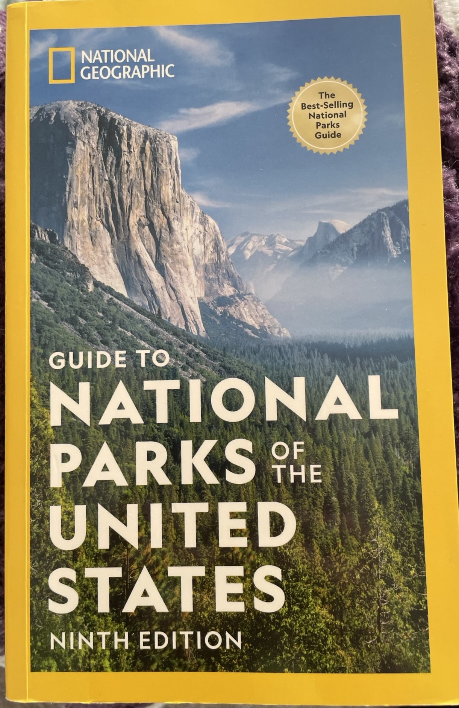
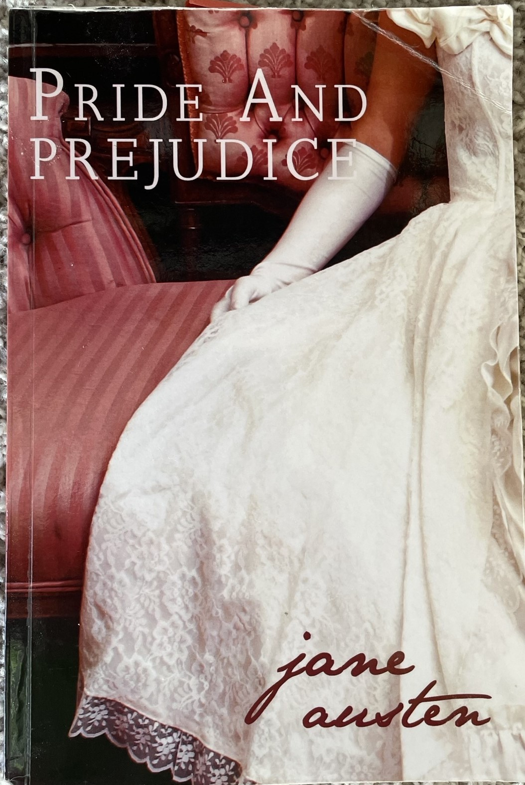

In May of 2023, I took a very exciting trip to the American Southwest. Specifically, my boyfriend and I spent a day in Las Vegas and then embarked on an 8-day roadtrip where we visited Zion National Park, Bryce Canyon, Horseshoe Bend, Lake Powell, Antelope Canyon, and the Grand Canyon. We did some rock climbing and tons of hiking. Plus, my boyfriend proposed in Zion and is now my fiance!
A favorite restaurant of mine is Main Street Bagel and Deli. This is a locally owned restaurant near me that makes delicious bagels. I love to have their garlic bagels with scallion cream cheese on the weekends.
My favorite food is definitely pasta, especially when topped with plenty of cheese. I love to eat it with my father's homemade pasta sauce that I grew up having or my fiance's vodka sauce. Of course, pasta is also great with cheesy sauces, butter, or olive oil. Sometimes I make pasta dishes with feta and veggies mixed in, like olives, tomatoes, zuccini, onions, and summer squash.
| Title | Cover | Author | Synopsis |
|---|---|---|---|
| Return of the King |  | J.R.R. Tolkein | This is the final book in the Lord of the Rings trilogy, where the reader sees if the evil ring is destroyed. It is the most exciting book of the trilogy. |
| Modern Crochet Sweaters |  | Janine Myska | This is an awesome book of crochet patterns for sweaters and cardigans. I have made one of the sweaters. |
| National Geographic Guide to National Parks of the United States 9th Edition |
 | National Geographic | This is a very helpful guide for planning national park trips. I have used it for planning my southwest roadtrip, a visit to Joshua Tree, and my upcoming Hawaii honeymoon. |
| Pride and Prejudice |  | Jane Austen | This is an classic love story about two people who initially do not like each other but fall in love. Like many people, I read this in high school. |